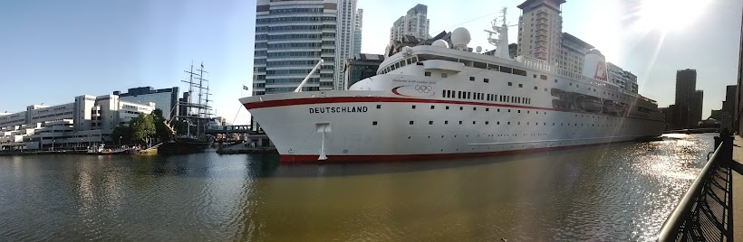

Tuesday, July the 24th, 2012
back to: title, date or indexes
An eerie photograph arrives in the post from Salim Fadhley

If you click to enlarge, you will see clearly that the name of this big ship is the Deutschland. Yet as we know, because Father Gerard Manley Hopkins SJ told us, the Deutschland was wrecked off the Kentish Knock on the morning of the seventh of December 1875. Five nuns were drowned! So could this be a ghost ship? And if we peer very very intently at the photo, can we see, there on deck, the Tall Nun? It is all very mysterious.